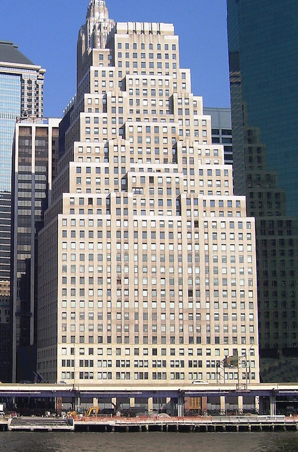
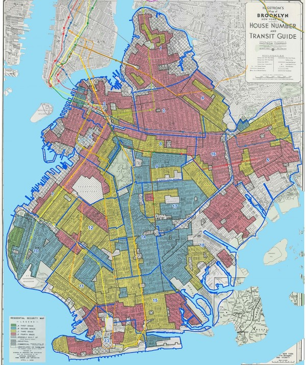

Introduction to Zoning 101
A Short Introduction
By Open New York
Technical
Development in New York City is governed by the Zoning Resolution, which maps every piece of land in the city that isn't a park with a zoning district. These districts, like codes in other cities across the United States, set rules across four broad parameters: use, height, bulk, and parking.
Use
Use rules dictate what kinds of things people are allowed to do in spaces. The four major ones are residential, community facility, commercial, and industrial. Districts may be single-use or mixed-use, which often occurs when both commercial and residential uses are allowed. Residential uses are simple enough – housing, whether multifamily units (apartments) or single-family. Community facilities are institutions that serve the community, such as schools, health care facilities, houses of worship, medical offices, etc.; the New York City Zoning code usually allows them to be built in residentially as well as commercially zoned neighborhoods. Commercial uses are more varied, and include offices, stores (retail), and hotels, the common thread being businesses that are not noxious. Finally, there is industrial property – warehouses, factories, and the like. The zoning code generally allows like uses near like uses – housing where housing already is, industry where industry already is.
Bulk
The currency of New York City real estate is development rights, which are endowed based on the floor area ratio – or FAR (known in some countries as floor space index, or FSI). FAR defines how much you're allowed to build, and is expressed as a multiple of the lot area. So a typical brownstone block in Brooklyn will have a FAR of 2, which means that developers are allowed to build twice as much total floor space as the lot is large. Higher FAR means more density--and thus more housing--can be built on each square foot of land.
In the absence of any other restrictions, developers have freedom to configure their floor area however they'd like. For a zoning district with an FAR of 2, they can build a two-story structure that covers the full lot, as is typical for commercial and industrial uses, where large floor plans are prized and light and air are not as important. Or, more likely for a residential district, they could build a four-story building that covers half of the lot – roughly the bulk of a mid-19th century typical brownstone townhouse.
Especially in higher-density zoning districts (such as the zoning districts in Midtown Manhattan, the Financial District, downtown Brooklyn, and Long Island City), developers can even trade floor area with owners of adjacent (or, in rare cases – for example, involving landmarks – even non-adjacent) parcels of land, turning your FAR into "air rights," as they're known in common parlance. Transferring air rights away to a nearby landowner is a common way to monetize "land" (in effect, development rights – land in New York City has little value without the right to build on it) when a property is landmarked (where the Landmarks Preservation Commission will not allow you to tear down or build on top of a historic building), or is filled with rent-regulated tenants (as is common in tenements and other older buildings with six or more apartments, which are covered under rent control or stabilization laws), or is perhaps just built too densely to tear down.
Height
Before the 1961 Zoning Resolution, height and lot coverage were the primary way that the city controlled the density of structures. After 1961, height regulation was mostly abandoned and replaced with FAR rules, as described above. But more recently, the Department of City Planning has started to reimpose height limits in addition to bulk controls. These height limits are normally imposed in such a way that they limit property owners' ability to trade away their air rights. Almost all rezonings over the past few decades, with the exception of rezonings to make way for large office skyscrapers in Midtown, have imposed height limits.
Parking
Beginning in 1941, the city began requiring developers to build off-street parking spaces when they develop new buildings. For residential space, the requirements are expressed relative to the number of apartments – anywhere from 1.5 parking spaces per unit on Staten Island, down to no parking required in Manhattan below West 110th St. or East 96th St. Outside of the Manhattan Core, Long Island City, and affordable housing developments in NYC's designated "Transit Zone", there are parking requirements in almost every neighborhood – even neighborhoods like Harlem and downtown Brooklyn that are extremely well served by transit – but with exceptions for smaller buildings and lots.
Mandatory Inclusionary Housing
Under the Koch and Bloomberg mayoral administrations, developers were granted a FAR bonus (meaning they could build denser housing and thus more units on the same plot of land) if they agreed to set aside a portion of the new units at a much lower rent for households in certain income bands. Under Mayor de Blasio, the New York City government made this policy mandatory rather than voluntary, requiring that all developers who benefited from an upzoning to set aside income-restricted units in their new developments. For a more detailed description, you can read this City Limits article.
Politics
Planning in New York City and the rest of America is governed by both written and unwritten rules.
The formal process for rezoning in New York is known as the Uniform Land Use Review Procedure, often abbreviated to "ULURP" (pronounced YOO-lurp). The ULURP process lasts seven months, and is followed whether the initiator is the city (which usually rezones whole neighborhoods, or substantial portions of them) or a private applicant (which usually requests a higher-density zoning designation for their own land). The process involves a series of advisory votes, culminating with a full City Council vote. You can check out a helpful graphic about the process here.
The most important individual in the ULURP process is the city councilmember for the district where a rezoning is being considered. While in theory the whole City Council votes on the application, members usually defer to the local council member. As a result, developers or the mayor's office will often negotiate directly with the councilmember, bargaining over things like heights, densities, and affordable housing requirements.
Beyond the ULURP process, there are some unwritten rules about what will and will not be rezoned. Generally, the easiest areas to rezone are industrial, where there are no neighbors to object, while the most difficult areas to rezone are wealthy residential areas, where well-heeled residents will bring pressure onto their local elected officials to oppose anything that might increase congestion, competition for on-street parking, or threaten their "light and air" with shadows or the character of their neighborhood with more modern and "out-of-scale" architecture.
As a result, residential areas tend to be off-limits to rezoning. Occasionally poorer areas will gladly accept more development, often because local residents are eager for the affordable housing that such an action can bring.
This leaves mostly commercial and industrial areas – a tiny portion of the city – that are available for rezonings. In New York, formerly industrial or commercial neighborhoods that have been rezoned for more development in recent years include Hudson Yards (on the far west side of Manhattan), Midtown East, downtown Brooklyn, the Williamsburg waterfront, downtown Jamaica, and Long Island City. Meanwhile, residential neighborhoods (especially elite ones, but also more downscale ones) tend to be rezoned in the opposite direction, or "downzoned" – for example, Park Slope, the inland parts of Williamsburg, the single-family neighborhoods around downtown Flushing and Jamaica and eastern Queens, and many others.
History
Pre-1916: Before 1916, there was no comprehensive zoning code in New York City. Building regulations were generally uniform across the city, and often the state. The result was that vacant land was often first built-out as high-end residential townhouses, and then densified and commercialized over time as fashions changed and the city grew. Neighborhoods tended to decline in desirability over time, with wealthy New Yorkers decamping to the next "hot" neighborhood on the "suburban" fringe (at the time, that might mean what is now Greenwich Village or the Upper East Side), while their old homes were subdivided for immigrants, and converted to commercial and industrial use. Property values in those older neighborhoods tended to decline accordingly, causing distress for elite property owners who held onto land past its prime.
1916: The first attempt to overcome this cycle came in 1916, when New York City passed the nation's first comprehensive zoning code.
It set use limits across the city – residential districts were limited to housing, business districts were limited to housing and commercial uses, and unrestricted districts allowed everything, including noxious industrial uses. These use rules were spurred by the upward march of industrial loft buildings up Fifth Avenue in Midtown. Property owners and city elites were afraid that the new lofts were disgorging too many Yiddish-speaking immigrant garment workers into the streets at lunchtime who were scaring Fifth Avenue shoppers, which led to use rules that moved the clothing manufacturers and their immigrant workforce to the west side, to what became the Garment District
At the same time, the zoning code imposed height limits that were strictest right up against the sidewalk and became looser as the lot deepened, resulting in Manhattan's iconic "wedding cake" skyscrapers, later imitated around the world. The Equitable Building in the Financial District, which was much denser than adjacent buildings and cast them in shadows, is often cited as the reason behind these rules.
1961: The rules passed in 1916 were tame relative to those in place today, and the main effect of the 1916 code was to limit the spread of stores and offices in residential neighborhoods, and of factories and warehouses in business districts. Although most of the city was built under the 1916 zoning, because the New Tenement Law and the Multiple Dwelling Law limited semi-fireproof apartment buildings to six stories, the zoning had limited effect outside the Central Business Districts.
In 1961, however, the rules became much tighter. The limits on heights were replaced with bulk restrictions – limits on FAR, or the total floor area of buildings. Tall towers in open plazas were encouraged over bulkier buildings that filled most of their lots. But most importantly, the new zoning code had the practical effect of making development impossible on most lots in the city outside of a select few neighborhoods.
Residential neighborhoods were zoned for roughly what was already built, and in most neighborhoods, only vacant land could be built on. Even then, development on small lots was difficult. The major exception was the Upper West Side, where the real estate industry won the right to build residential high-rises on the avenues.
1987: The last major citywide zoning change was known as the Quality Housing program, passed in the late 1980s. The program sought to correct a major failing of the 1961 code, which was that developers needed to assemble fairly large lots in order to make full use of their allowed densities. The idea in 1961 was to encourage tall, slender towers with lots of open space on large development sites, but this proved prohibitively difficult in built-out neighborhoods where vacant lots could be as narrow as 20 feet wide.
The new rules allowed developers to make full use of their development rights on small lots. Development was still largely limited to vacant and nearly vacant lots, but this was nevertheless an improvement over the old 1961 rules.
2001–present: During the Bloomberg administration (following a trend that had begun prior to its inception), the city increasingly sought to rezone industrial and commercial land for housing and higher densities. At the same time, community groups sought to forbid what little "out-of-scale" development was still allowed in residential neighborhoods, effectively freezing them in place. The two goals ended up being conjoined by Bloomberg-era logrolling , with downzonings in residential areas being traded for upzonings in areas without housing and nearby neighbors to complain. The de Blasio administration has mostly continued this trend, while also adding on the Mandatory Inclusionary Housing Program (see the Technical Section for details).
Broader Impacts:
So, you've heard about the history, the technical details, and the politics of zoning in New York City. All of this might be fascinating to you—or maybe not. It can be a bit dull, so the most important question is why should you care? You might prefer the bucolic pastures of rural upstate New York or the rolling lawns, good schools, and big houses in Westchester and the surrounding suburbs over the rush of the big city—but the politics and process of zoning still impact your lives each and every day. No matter what your particular passion or interest, zoning and housing ultimately lies at the center of it. In this section, we touch on just a few of the ways that zoning affects our everyday lives.
Segregation
The housing segregation that exists today in the USA is no accident. It was systematically underwritten by the federal government and continues today thanks in part to strict zoning regulations.
In the 1930s, the Federal Housing Administration was created to insure mortgages for first-time homeowners who would not otherwise qualify for loans from the bank. If homeowners with FHA-backed loans defaulted on their mortgages, their mortgage insurance would ensure the bank was paid. Although today the FHA will insure loans to anyone who meets certain qualifications, when the FHA was first created, they would only insure loans in certain neighborhoods, which were marked by various colors on maps. Green was the most desirable, followed by blue, yellow, and finally red—from which the name "redlining" was derived—neighborhoods that the FHA would refuse to insure mortgages for. These neighborhoods were delineated based on several factors—chief among them the presence of black people and other minorities. The whiter a neighborhood, the more desirable it was. Lacking the surety of FHA insurance, banks then refused to lend to any homeowners in the red neighborhoods—thus systematically denying non-whites the ability to obtain mortgages and participate in homeownership. The value of properties in these neighborhoods fell drastically, as no banks would lend the money to buy such properties, and thus the current landlords and homeowners allowed them to fall into decay. Policymakers also reinforced this decline through zoning laws--zoning poorer neighborhoods, which were often but not always black ones, to allow industrial warehouses and waste disposal, thus lowering their desirability and property values. Whites fled the redlined neighborhoods, often in the city, for more desirable ones—often in the suburbs. Ergo, the segregation of the American cities and their suburbs. Though this practice was ended with the 1968 Fair Housing Act, its effects are still clear even today—in New York City, many (although not all) formerly redlined neighborhoods have some of the highest poverty rates--and since home equity represents the largest share of most households' wealth, those who were able to obtain access to homes (I.e. whites) are today much wealthier than those who could not.

A Redlining Map of Brooklyn
Even today, American cities remain segregated. Long Island is home to some of the most segregated communities in the country. Even as de jure segregation has been continually struck down by the judicial and legislative system, de facto segregation still remains the rule, not the exception, in most of the suburbs surrounding New York City—strengthened by their exclusionary zoning practices.
Much of the residential areas in Long Island and the other NYC suburbs are solely zoned for single family houses, which reinforces their exclusive nature. The more units built on a lot, the more affordable and thus accessible each unit is. The cost of land is a fixed cost—so as the number housing units that can be built on the land goes up, the cost per person of the land goes down, and thus the overall cost of housing decreases. Not only does zoning only for single family homes decrease the potential supply available for housing, these homes are also a more in-demand and desirable form of housing and thus naturally command a higher price. Because race and income and the financial means to buy (or the good fortune to inherit) a house are closely intertwined, racial and economic segregation is reinforced by the bias towards single family zoning in the suburbs.
Transit
If you care about public transportation and eliminating suburban sprawl, zoning should be important to you. It's integral for two reasons—one, low density areas are not conducive to public transportation, and two, parking requirements subsidize car travel at the expense of other types of travel.
Public transit is most successful when there are dense, walkable neighborhoods around the stations. In order to be utilized, public transit needs to be more convenient and easy to use than other forms of travel. Cars are usually more convenient than public transportation for long distances—so, in order for people to choose public transportation or other alternate forms of transportation like biking or walking, they need to be relatively close to wherever they're going. That requires denser housing and offices and businesses much closer to home—all of which are undermined and even forbidden by the low density zoning favored by most zoning codes today.
Not only is public transit undercut by zoning codes that favor lower density, driving is subsidized by the common use of parking requirements—even in areas that are well-served by public transportation! When zoning regulations require parking that would not otherwise be built, they add higher costs to development that will have to be made up elsewhere in the business model—perhaps by raising prices or paying their employees less—and they reduce the land available for other uses, like housing or other businesses. Parking requirements also make driving more convenient—further undermining the use of public transit. Even in NYC, where the subway runs 24/7 and public transport is accessible in much of the city, the current zoning code's parking requirements encourage commuting by car--at the expense of other modes of transport.
Carbon Emissions and Climate Change
Density is good for the environment, particularly in cities with robust public transportation systems. Those who live in dense cities are more likely to use environmentally-friendly public transit, walk, bike, or drive much shorter distances, all of which emit less carbon than the car-dependent lifestyles of less dense communities. Further, communities with more single and two family-homes emit far more carbon per person than those with denser housing. Each individual building requires the energy-intensive tasks of building infrastructure like water lines, gas lines, electricity, and internet—so when there are more households in a single building, each person requires relatively less. Urban, dense communities also inherently encourage lower usage of energy--living in a smaller space means less to heat, living without lawns means less water, living in an apartment building means natural insulation from other units, and so on. Unsurprisingly, research has suggested that those living in population-dense cities contribute less to carbon emissions per capita than anywhere else--but the suburbs of those same cities completely wipe out this benefit.
Unfortunately, although cities like New York support lifestyles that use less energy and thus emit less carbon, the high costs of housing, driven by the artificial restrictions on housing, drive more people to the cheaper but more energy intense pastures of the suburbs or sprawling Sunbelt cities like Atlanta or Dallas. By attempting to restrict density and preventing newcomers from moving to New York or California, locals are in fact increasing the levels of carbon emissions across the USA as a whole.
Affordability and Inequality
Most importantly, restrictive zoning codes are fundamentally linked to much higher prices in housing, and thus less affordable neighborhoods. Modern day zoning artificially caps the potential number of housing units and thus limits the supply of housing on the market, which, absent any unrelated fall in demand for housing, should lead to an increase in prices. In fact, research has borne this out. Several studies have found that the high cost of housing in certain local economies, including those of California's cities and New York City, are, in large part, due to restrictive zoning codes and other regulations that determine how land can be used. Unfortunately, the cost of housing has far outpaced wage increases, particularly for renters, who make up nearly two-thirds of New York City residents!
Inequality
Increased inequality and concentration of wealth has become a great concern to many post-Great Recession. Because housing wealth makes up such a large share of overall wealth, researchers have found that the largest share of the increase in inequality over the last few decades can be attributed to real estate appreciation—I.e. an increase in the price of real estate. This isn't due to greater investment in homes—just the opposite, as homeowners have rarely tapped their equity for home improvements (or anything else) since the Great Recession. Rather, real estate prices have increased because of the artificial cap on supply imposed by zoning regulation, so house equity, and thus, overall wealth, has increased rapidly—but only for those who already own property. For those who rent, the increased cost of real estate is passed on in the form of higher rents, as well as a decreased probability of owning property themselves one day. In fact, recent work from the Federal Reserve Bank of New York has found that while housing wealth has fully recovered since the Great Recession, it has done so very unevenly. Homeownership rates and home wealth have improved among the middle-aged and elderly, but millennials and young people have shockingly low rates of owning property, and thus being able to access one of the easiest ways to accrue wealth.
Unequal zoning codes also accelerate gentrification. Desirable neighborhoods like Greenwich Village, Chelsea, Park Slope, Brooklyn Heights and Boerum Hill are relatively low-density, meaning there both that there is a lack of housing for people to move into and that housing prices are more expensive due to that same lack of supply. Instead, young, relatively well-off newcomers to NYC move to areas like Bed-Stuy, Crown Heights, or Williamsburg, where housing is cheaper, and since they are able to pay more for that housing than long-term residents, rent prices in those neighborhoods rise and can lead to displacement of long-term residents. Short of physically preventing newcomers from moving in, which is obviously out of the question, the only way to prevent displacement is to allow more people to live in desirable neighborhoods through upzonings. This would both make those neighborhoods cheaper and allow more college-educated newcomers to live in already wealthy areas instead of flooding the market in gentrifying neighborhoods.
Competition
Zoning restricts a competitive market, and creates red tape and thus increased prices, by capping the number of potential housing units that could be built. This restriction favors the most well-connected and wealthy. Discretion in zoning favors politically well-connected developers, which incentivizes those same developers to grease the hands of politicians and thus locks smaller players out of the market. It also reinforces a cartel amongst those who oppose the rights of neighboring property owners to build higher or denser buildings, primarily so that their own property values will be higher. Many zoning codes also prevent fairly innocuous solutions that could help relieve a shortage of housing, as well as bring in some income for the homeowners, like Accessory Dwelling Units (a second small dwelling attached to a single-family home that could be rented out to another household). By undermining a competitive market, creating excess red tape, and restricting the potential supply of housing, strict zoning codes reinforce artificially high housing prices.
Mobility and the Overall Economy
Land use regulations such as zoning, which artificially restrict the supply and thus drive up the cost of housing, inhibit interstate mobility, which is undesirable both on an individual and macro level. Wages are significantly higher for both low-skilled and high-skilled jobs in metro areas like New York City and the California Bay Area, but the high cost of housing prevents all but the most highly paid from moving there. The high costs not only influence who is moving in, they also determine who leaves the state for cheaper pastures. Instead of families choosing to settle down in the area where they could find the highest-paying or best careers, they must make their decisions based on the cost of living in those places. This also dampens the whole U.S. economy, since people aren't moving to where they would be the most productive and make the most money, but rather where they can afford. One study by UC Berkeley economists found that restrictive land use regulations (which include, but are not limited to, strict zoning codes), by hindering the construction and sale of new homes, as well as preventing people from moving to where they can earn the most money, reduce the overall output of the U.S. economy by as much as $1.5 trillion a year!
Moreover, this phenomenon reinforces localized inequality. See the recent mass exodus of middle and lower-earning people from California, to cheaper places like Texas or Nevada. Most people who have left the state earn less than $30,000 a year, while those who arrive make more and are better-equipped to pay the high housing costs. Thanks to their restrictive zoning codes and high housing prices, states like California and New York are becoming a playground for the rich, rather than a haven open to all.
We hope that we've convinced that you should care about zoning, regardless of what you care about. This issue can seem rather far removed, but the truth is that the seemingly small decisions made on a daily basis in City Council have much larger ripple effects down the road. Politics--especially local politics--is ultimately about who shows up. If you're interested in changing things--and making New York City into a city where all are welcome--come join us at Open New York. We're a big tent movement, and welcome people from all different ideological and personal backgrounds. Whatever your reason for caring, we want you!